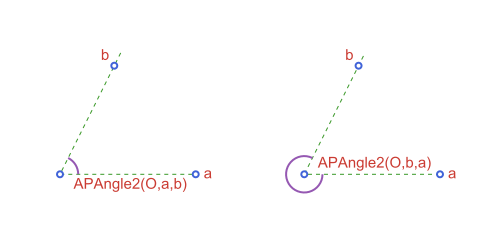
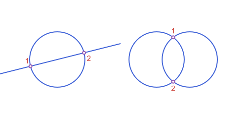
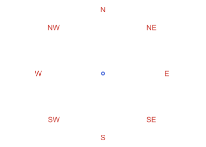
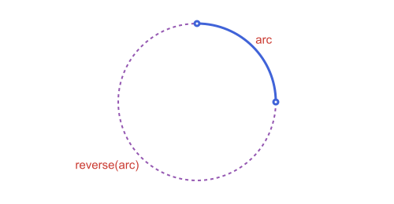

Conventions & FAQ
The rules the whole package follows, and the questions that come up most often. If a function surprises you, look here first.
Angles, directions and parameters
| Topic | Convention |
|---|---|
| Angle unit | Radians everywhere. Functions that also take degrees say so in their name (polar_point_deg). |
| Orientation | Counterclockwise is positive. APCircularArc2 always runs counterclockwise from p1 to p2, and APAngle2 is the wedge swept counterclockwise from a to b. |
Parameter t on an arc | t = 0 is p1 and t = 1 is p2, the same for point_on, tangent_at and marks. It is proportional to length only for a segment; on a circular arc it is proportional to the swept angle, and on the other conic arcs it follows the conic's own parameter. |
| Tolerances | Predicates and constructions take atol (default 1e-9). Where it is scaled, it is scaled by the size of the objects involved (a radius, a side), never by how far they sit from the origin. |
using Apollonius
c = APCircle2(APPoint(0.0, 0.0), 3.0)
arc = APCircularArc2(c, APPoint(3.0, 0.0), APPoint(0.0, 3.0))
measure(arc) ≈ pi / 2, point_on(arc, 0.0) ≈ arc.p1(true, true)The order of the two rays decides which wedge you get. Swapping a and b gives the other one:

See script
using Apollonius, Luxor
import Apollonius: distance
import Luxor: julia_red, julia_blue, julia_green, julia_purple
lxm = @prepare_to_picture! width=500 height=240 margin=60 begin
O1, A1, B1 = APPoint(0.0, 0.0), APPoint(5.0, 0.0), APPoint(2.0, 4.0)
O2, A2, B2 = APPoint(9.0, 0.0), APPoint(14.0, 0.0), APPoint(11.0, 4.0)
ang1 = APAngle2(O1, A1, B1)
ang2 = APAngle2(O2, B2, A2)
end
begin
Drawing(lxm.width, lxm.height, :svg)
origin(); fontsize(15)
@layer begin
setline(1); setdash(:dash)
sethue(julia_green)
path([ang1, ang2], action=:stroke, as=:rays, radius=distance(O1, A1))
end
sethue(julia_purple)
path([ang1, ang2], action=:stroke)
sethue(julia_red)
label.("a", :E, [A1, A2], offset=8)
label.("b", :NW, [B1, B2], offset=8)
label("APAngle2(O,a,b)", :SE, O1 + APVector(10, 0.0))
label("APAngle2(O,b,a)", :NE, O2 + APVector(10, 0.0))
sethue("white")
path([O1, A1, B1, O2, A2, B2], action=:fillpreserve)
sethue(julia_blue); strokepath()
finish()
preview()
endNaming
- Types start with
AP. A2at the end marks a type whose formulas only make sense in the plane (APCircle2,APAngle2); types without it are written for any dimension (APPoint,APSegment). APType(...)is a constructor: the result is that type whatever the computation. Asnake_casefunction returns a derived object whose identity depends on the algorithm (circumcircle,regular_polygon,triangle_on_segment)._with_in a name says what you fix in advance (arc_with_measure,tangent_circles_with_radius).
Equality
== compares the stored fields exactly, so two lines through the same points in a different order are not ==. ≈ compares the geometry: lines, rays, ellipses and hyperbolas that describe the same curve are ≈ even if their fields differ. This matters more than it looks: an ellipse built from two foci gives the same curve if you swap them, but its angle changes by π.
f1, f2 = APPoint(-3.0, 0.0), APPoint(3.0, 0.0)
e1, e2 = APEllipse2(f1, f2, 5.0), APEllipse2(f2, f1, 5.0)
e1 == e2, e1 ≈ e2(false, true)== compares every coordinate exactly, so two constructions of the same point can differ in the last digit. Use ≈. It compares with a relative tolerance, which cannot tell a value from 0: when a coordinate can be zero, use isapprox(a, b; atol=1e-9).
What functions return
| Kind of function | Returns |
|---|---|
A geometric operation that can have several answers (intersection, tangent_points) | A Vector with 0, 1 or 2 elements (more for tangent_circles), never nothing. |
A decoration (marks, brace, grid_lines, coordinate_guides) | A Vector of geometric objects, ready for path. |
A shown construction (mediator_construction and its family) | A NamedTuple (result, arcs, points). |
A label position (label_anchor, brace_anchor) | A NamedTuple (alignment, point), in the argument order of Luxor's label. |
The order of the elements of a Vector result is not part of the contract, with two exceptions: intersection of a line and a circle lists the points in the direction of the line, and of two circles lists first the point to the left of the direction from the first center to the second. Do not rely on the order of tangent_circles.

See script
using Apollonius, Luxor
import Luxor: julia_red, julia_blue, julia_green, julia_purple
lxm = @prepare_to_picture! width=560 height=260 margin=30 begin
c1 = APCircle2(APPoint(0.0, 0.0), 2.5)
l = APLine(APPoint(-4.0, -1.0), APPoint(4.0, 1.0))
lp = intersection(l, c1)
d1 = APCircle2(APPoint(9.0, 0.0), 2.5)
d2 = APCircle2(APPoint(12.0, 0.0), 2.5)
cp = intersection(d1, d2)
end
begin
Drawing(lxm.width, lxm.height, :svg)
origin(); fontsize(15)
sethue(julia_blue)
path([c1, d1, d2], action=:stroke)
path(l, action=:stroke, extend=40)
sethue(julia_red)
label("1", :NW, lp[1], offset=8)
label("2", :SE, lp[2], offset=8)
label("1", :N, cp[1], offset=8)
label("2", :S, cp[2], offset=8)
sethue("white")
path([lp cp], action=:fillpreserve)
sethue(julia_purple); strokepath()
finish()
preview()
endDrawing: coordinates and sizes
Two rules govern every function that decorates a figure.
Sizes are in the units of the objects you pass. marks(s; size=6) makes marks 6 units long in whatever coordinates s is in. To get 6 pixels, build the decoration from objects that are already in canvas coordinates, such as the ones @prepare_to_picture returns, and draw them afterwards. Decorations computed before the transform scale with the figure.
"Left", "above" and compass directions are read on screen. Luxor draws with y growing downward, so the functions that pick a side (label_anchor, brace, brace_anchor) assume the coordinates they receive are the ones about to be drawn. A :left label on a segment going from left to right on screen is above it, and :N is up. Call them on the transformed objects and it all lines up.

See script
using Apollonius, Luxor
import Luxor: julia_red, julia_blue, julia_green, julia_purple
lxm = @prepare_to_picture! width=420 height=300 margin=30 begin
O = APPoint(0.0, 0.0)
ring = [polar_point(4.0, k * pi / 4) for k in 0:7]
end
Drawing(lxm.width, lxm.height, :svg)
origin(); fontsize(15)
sethue(julia_red)
for (n, p) in zip(("E", "NE", "N", "NW", "W", "SW", "S", "SE"), ring)
label(n, Symbol(n), p)
end
sethue("white")
path(O, action=:fillpreserve)
sethue(julia_blue); strokepath()
finish()
preview()The Marks, Labels & Decorations page has the details.
Marks, arrows, braces and label positions are computed in the units of the objects you give them, and the compass and side arguments read the screen convention. Give them the objects that @prepare_to_picture returns. The order of the steps is in Workflow: From Construction to Figure.
Frequently asked questions
Is reverse(arc) the same as path(arc; reverse=true)? No. reverse(arc) builds a new arc: for a circular or elliptic arc it is the complementary one, the rest of the circle. path(arc; reverse=true) draws the very same arc, traversed backwards, which is what you want to put an arrowhead at the other end. See Drawing with Luxor.jl.
measure(arc) ≈ pi / 2, measure(reverse(arc)) ≈ 3pi / 2(true, true)
See script
using Apollonius, Luxor
import Luxor: julia_red, julia_blue, julia_green, julia_purple
lxm = @prepare_to_picture! width=500 height=260 margin=30 begin
arc = APCircularArc2(APCircle2(APPoint(0.0, 0.0), 3.0), APPoint(3.0, 0.0), APPoint(0.0, 3.0))
comp = reverse(arc)
end
begin
Drawing(lxm.width, lxm.height, :svg)
origin(); fontsize(15)
sethue(julia_purple); setdash(:dash)
path(comp, action=:stroke)
setdash(:solid)
sethue(julia_blue)
path(arc, action=:stroke)
sethue(julia_red)
label("arc", :NE, point_on(arc, 0.5))
label("reverse(arc)", :SW, point_on(comp, 0.5))
sethue("white")
path([arc.p1, arc.p2], action=:fillpreserve)
sethue(julia_blue); strokepath()
finish()
preview()
endWhy does s[end] fail on a segment? Indexing works (s[1], s[2]) but the end keyword does not, for every indexable type in the package. Use s[2], or vertices(polyline)[end] for a polyline.
My marks or labels are the wrong size after @prepare_to_picture. They were computed on the original objects, and the transform then scaled them. Compute them from the transformed objects instead.
What is the difference between @prepare_to_picture and @prepare_to_picture!? The plain macro returns transformed copies and leaves your variables alone. The ! form rebinds them in place, which also changes them for every later use in the same script.
path(v) and path.(v) look the same, are they? Only for actions that render immediately (:stroke, :fill). With the default action=:path only path(v) starts a fresh subpath for each element, and path.(v) leaves stray connecting lines.
The two points of an intersection come back in the wrong order. Pick them by geometry instead of by position: filter on a side of a line, or argmin on a distance. The two documented orders are in the table above.
Why does a construction return arcs I did not ask for? The shown constructions (mediator_construction and the rest) return the compass traces of the ruler-and-compass steps along with the result, so a figure can draw the steps. Ignore arcs if you only want result.